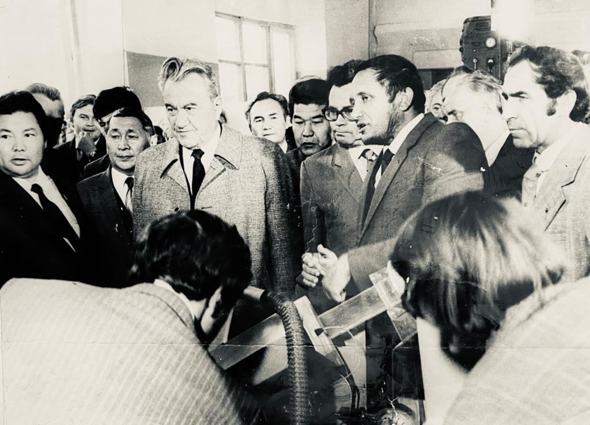
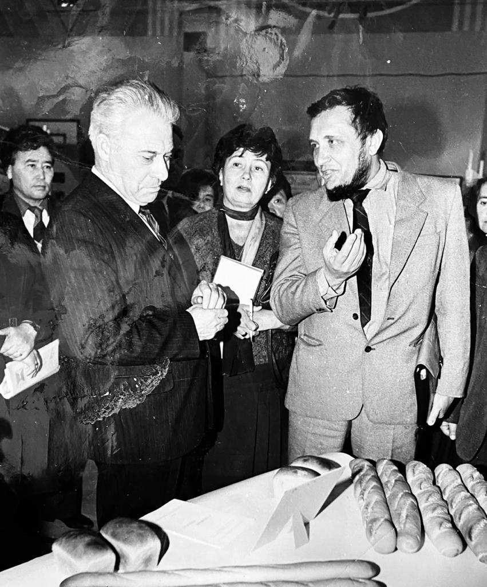
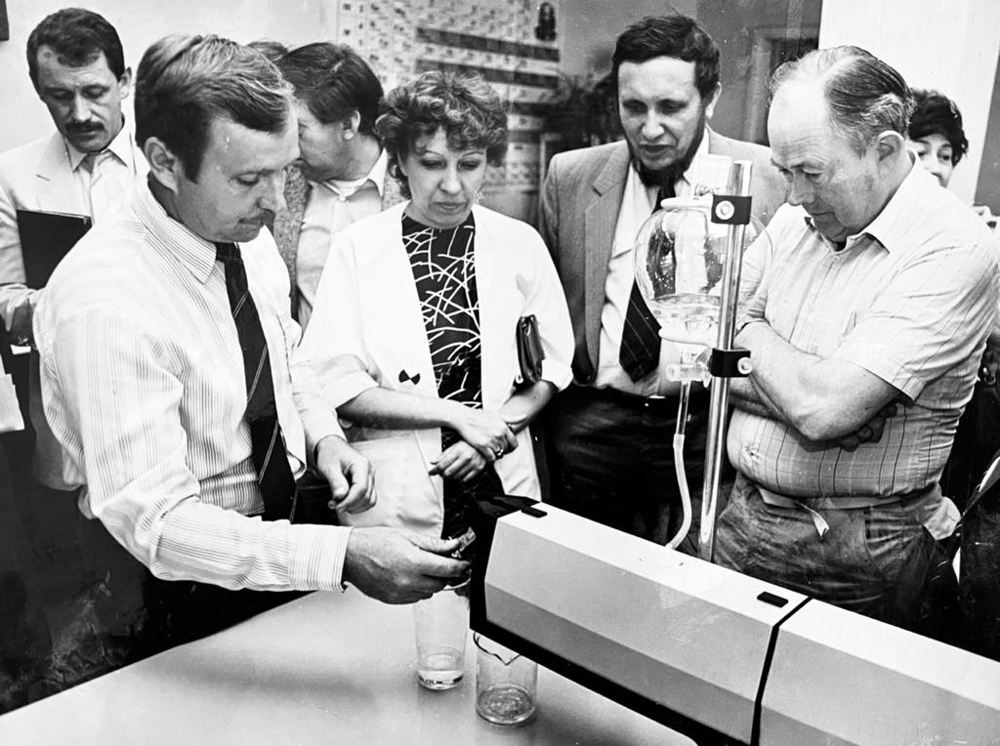

Биография

Биография
ИНЮШИН ВИКТОР МИХАЙЛОВИЧ
Профессор биофизики Казахского Национального университета им. Аль-Фараби. Заслуженный изобретатель Республики Казахстан
Академик Лазерной Академии наук Российской Федерации
Виктор Михайлович Инюшин родился 1 марта 1941 года в городе
Ленинграде в семье известного и крупного гидростроителя, Героя Социалистического Труда М.
Инюшина. В 1948-1958 годах учился в средней школе г. Усть-Каменогорска и г. Серебрянска
Восточно-Казахстанской области Республики Казахстан. Практически вся его сознательная жизнь
связана с Казахским национальным университетом имени АльФараби, в котором он обучался в
1958-1963 гг. и где по сегодняшний день продолжает трудиться. После окончания университета за
огромный интерес и прилежание в учебе и науке Виктора Михайловича приняли на работу в качестве
стажера-исследователя кафедры гистологии и цитологии, а после стажировки он стал работать
преподавателем, старшим преподавателем и доцентом той же кафедры.

В результате титанического и систематического труда и за короткий
отрезок времени Виктором Михайловичем были успешно защищены кандидатская и докторская
диссертации. Так, в 1966 году он успешно защитил кандидатскую диссертацию на тему «Монохроматический
красный свет для репарации лучевых повреждений у животных», а в 1972 году, в возрасте 31
года, блестяще защитил докторскую диссертацию на тему «Гистофизиологическое исследование
действия излучений оптических квантовых генераторов и других светоустановок на организм человека
и животных», став самым молодым доктором биологических наук в Союзе. После защиты
диссертации Виктор Михайлович с большим энтузиазмом начал работать над организацией новой
кафедры биофизики, и в 1973 году по личной инициативе, под его руководством и при поддержке
тогдашнего ректора КазГУ им. С. М. Кирова академика НАН РК У. А. Джолдасбекова впервые в истории
нашего университета на базе биологического факультета была организована кафедра биофизики.
В том же году Инюшин был утвержден в должности заведующего кафедрой
биофизики, и на этой должности проработал более 20 лет. Создание кафедры биофизики позволило ему
уделять большое внимание развитию и координации биофизических исследований в Казахстане, а также
подготовке кадров по биофизике. В 1975 году Виктор Михайлович утвержден в ученом звании
профессора биофизики. Этот период знаменуется ростом его яркого организаторского,
педагогического и научного таланта. Виктор Михайлович впервые начал ряд исследований по
установлению механизмов действия излучения оптических квантовых генераторов (лазеров) на
биофизические, физиологические, биохимические и морфологические показатели животных, растений,
микроорганизмов и человека при различных функциональных состояниях организма. Впервые были
доказаны специфические и неспецифические особенности действия на биологические объекты, явления
лазерных излучений.

Виктор Михайлович внес огромный вклад в развитие теории и практики
фотобиологии и биофизики в Казахстане. Его имя хорошо и широко известно среди специалистов в
республике и за ее пределами, а его труды часто цитируются в научных публикациях. Виктор
Михайлович с большим рвением взялся за работу по формированию научного потенциала кафедры,
организуя одним из первых в университете хоздоговорные исследования по применению оптических
квантовых генераторов в сельском хозяйстве, в производстве и в медицине как у нас в республике,
так и в России и Белоруссии. При его непосредственном участии и практической поддержке на этих
материалах выросли как специалисты и защитили диссертации аспиранты и сотрудники кафедры,
ставшие затем ее сотрудниками. Также он является первым исследователем в области биофизической
экологии – биофизический мониторинг водной среды, электромагнитные поля и живая природа,
биофизические аспекты акупунктуры, биофизические особенности аномальных зон, разработка
биофизической аппаратуры для экспресс-индикации аномалии на территории Республики Казахстан и
для медицины.Развивая вышеуказанные научные направления, Виктор Михайлович
организовал проблемную лабораторию «Биоэнергетическая структура биосистем», а в 1977
году впервые создал при университете учебно-научно-производственное объединение (УНПО)
«Биофизика»,
где в единую структуру были объединены учебные, научные и производственные процессы.
С момента
организации кафедры сотрудники кафедры под руководством В. М. Инюшина организовали и провели
более 20 научных конференции и семинаров, посвященных различным аспектам прикладной биофизики.
По материалам научно-исследовательских работ Виктором Михайловичем опубликовано 35 монографий, 7
учебных пособий и учебно-методических рекомендаций. Под научным руководством В.М. Инюшина
защищены 5 докторских и 16 кандидатских диссертаций. Он является членом редакционных коллегий
ряда зарубежных изданий: «Психоэнергетические системы» (Сан-Франциско, США) и
«Аурикулотерапия» (ТельАвив, Израиль). Научная деятельность Виктора Михайловича
многогранна, его новые поиски всегда базируются на достижениях смежных и прикладных дисциплин.

Он является автором гипотезы биоплазмы. Теоретическое обоснование
взаимодействия биоплазмы-геоплазмы является базой для создания и развития принципиально новых
методов мониторинга экологической среды и методов регистрации предвестников землетрясений. На
этой базе разработал новую технологию получения воды с заданными свойствами. В своей монографии
«Пространственно-временная структура биоплазменного тела человека» (2007) он
рассмотрел объективные основы механизмов реализации в живом организме голограммно-информационных
процессов с включением органически целостной матрицы-биоплазмы.
Всего Виктором Михайловичем опубликовано более 400 научных и
публицистических работ, многие из которых известны и в дальнем зарубежье. Он многократно
выступал и продолжает выступать на различных международных, региональных и республиканских
научных форумах и на телевидении, привлекая внимание нетривиальным мнением, оригинальным и
нестандартным анализом как по общебиологическим, так и по частным вопросом биофизики. Большие
педагогические, творческие и организационные возможности Виктора Михайловича были отмечены
избранием его членом и почетным членом ряда международных научных организаций: Международной
ассоциации по изучению эффекта Кирлиан (Нью-Йорк, США),
Международного фонда имени А. Л. Чижевского (Москва, Россия),
Ученого совета Зороастрианского колледжа (Мумбай, Индия), профессором Международного
университета альтернативной медицины (Мамбей, Коломбо), Лазерной академии наук (Москва, Россия).
В Казахстане и за его пределами Виктор Михайлович известен как общественный деятель и активный
член международного антиядерного движения «НевадаСемипалатинск».
За успехи в работе В. М. Инюшин был удостоен звания «Заслуженный
изобретатель Республики Казахстан», избран действительным членом (академиком) Лазерной
академии наук РФ, награжден золотой медалью Международного фонда имени А. Л. Чижевского,
юбилейными медалями «70 лет КазГУ им. С. М. Кирова», «75 лет КазНУ им.
Аль-Фараби», «80 лет КазНУ им. Аль-Фараби» и орденом «Кұрмет» РК.